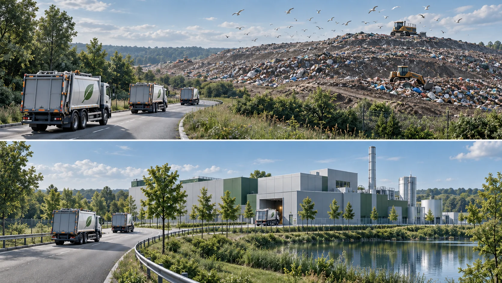

Technologiekompetenz trifft internationale Umsetzung.
Global EnerTec AG ist ein deutsches Technologie- und Projektunternehmen für komplexe Infrastrukturvorhaben in Energie, Abfall- und Kreislaufwirtschaft sowie Wasser- und Abwasserwirtschaft.
Ganzheitliche Projektbegleitung
Wir begleiten unsere Kunden von der ersten Projektidee bis zum laufenden Betrieb: Konzeption und Machbarkeitsbewertung, Planung, Genehmigung, Ausschreibung und Vergabe, Technologieauswahl und -integration, Bau- und Projektüberwachung, Inbetriebnahme sowie Betriebsbegleitung.
Internationale Umsetzungskompetenz
Das Führungsteam vereint jahrzehntelange internationale Erfahrung in der Beratung, Entwicklung und Umsetzung komplexer Infrastrukturvorhaben. Die heute bei Global EnerTec AG gebündelte persönliche Projektkompetenz umfasst Erfahrungen aus mehr als 60 realisierten Projekten in über 30 Ländern, darunter Energie- und Versorgungsanalysen sowie umfassende Modernisierungsprogramme und Masterpläne für Wasser-, Energie- und Umweltinfrastruktur.
Global EnerTec AG verbindet damit technologische Innovation mit bewährter internationaler Projektmanagement-Kompetenz.
